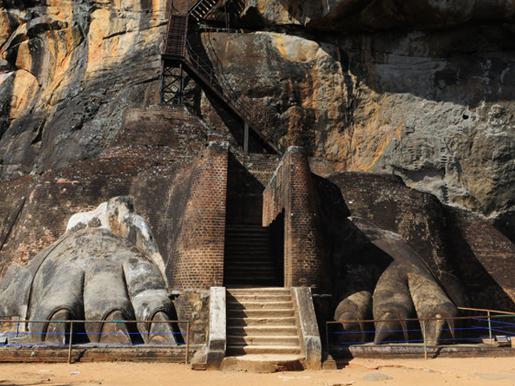

The Rise of Sigiriya
Discover how King Kashyapa transformed a towering rock into a magnificent fortress and royal palace in the 5th century. Sigiriya stands today as a symbol of ancient power, creativity, and engineering brilliance.

Frescoes, Gardens, and the Mirror Wall
Walk through beautifully designed water gardens, marvel at ancient frescoes high up the rock, and read centuries-old writings on the Mirror Wall. Sigiriya is a masterpiece of ancient urban design and creativity.

Unsolved Stories of Sigiriya
Was Sigiriya once a palace or a monastery? Are there hidden tunnels beneath the rock? Explore the myths and unanswered questions that still surround this ancient wonder.